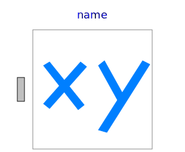
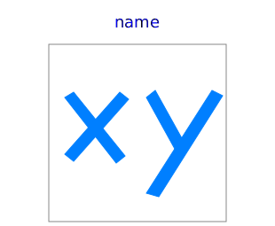

This package contains components to construct 3-dim. fonts with "cylinder" elements for the animation window. This is just a temporary hack until 3-dim. fonts are supported in Modelica tools. The components are used to construct the "x", "y", "z" labels of coordinates systems in the animation.
| Name | Description |
|---|---|
|  FixedLines | Visualizing a set of lines as cylinders (e.g., used to display characters) |
|  Lines | Visualizing a set of lines as cylinders with variable size, e.g., used to display characters (no Frame connector) |